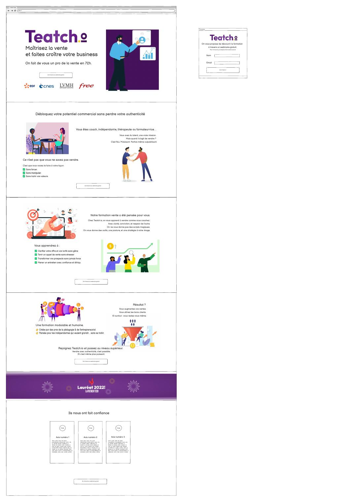
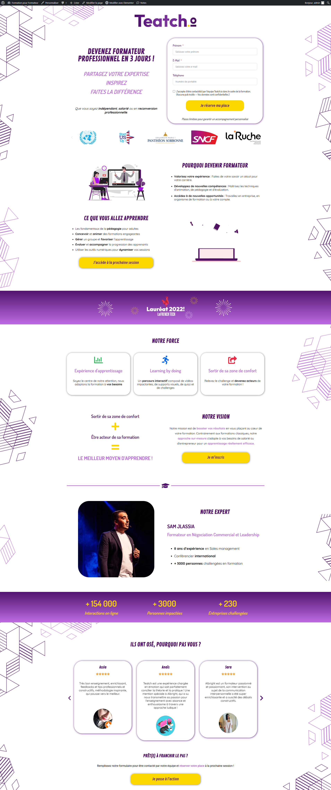
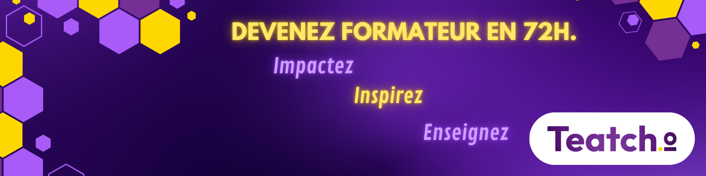

Cas d'école mené à la Rocket School, avec un périmètre proche de Studio Uniforme Urbain — prospection et qualification de leads — complété cette fois par la création d'une landing page et de contenus visuels pour des campagnes publicitaires Facebook.
Teatch.io propose une formation courte (72h) pour devenir formateur professionnel : un programme destiné aux indépendants, salariés en reconversion ou entrepreneurs souhaitant transformer leur expertise en activité de formation. La marque a été lauréate French Tech 2022. L'objectif du brief était de générer des inscriptions au webinaire de découverte via une landing page dédiée et des campagnes de prospection et publicité ciblées.



Une capacité à couvrir toute la chaîne d'acquisition — de la prospection sortante à la conversion sur une landing page dédiée — tout en produisant les visuels publicitaires nécessaires pour alimenter les campagnes.